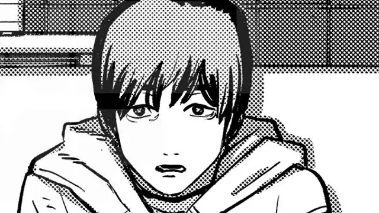

CAM 01Protagonis · sutradara
Yuta Itō
Anak yang merekam segalanya. Film pertamanya, tentang sakit ibunya, berakhir dengan dirinya berlari dari rumah sakit yang meledak, dan satu sekolah membencinya.
Ia memotong bagian buruk dari filmnya, juga dari ingatannya. Saat dewasa ia kehilangan istri, anak, dan ayahnya dalam kecelakaan mobil, dan bertahun-tahun terus menyunting ulang film Eri.